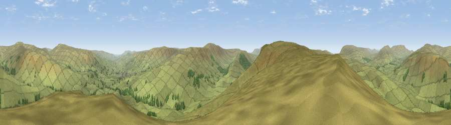

Viewpoint near Appersett
#10509 in England · top 26% of its area beats it · near AppersettThe view, rendered

A 360° render of this exact spot computed from the terrain model, tree cover and land cover — summer colours, afternoon light, calibrated against photographs of famous viewpoints. Real trees, hedges and buildings will differ in detail.
The panorama
Grey silhouette: terrain skyline in each direction (720 bearings, Earth curvature and refraction included). Dashed green: skyline with trees (+15 m) and buildings (+8 m) as obstacles. Blue strip: how far the ground is visible on each bearing.
Where the view opens
Wedge length = distance to the farthest visible ground on that bearing (vegetation-aware). Rings at 10, 25 and 50 km.
What fills the view
96% grassland · 4% woodland
Angular shares of the visible panorama (visual magnitude), not map area. Landscape diversity 0.08 (0–1 Shannon).
Key numbers
More beautiful places nearby
The staircase of upgrades: each row has a higher view potential than everything closer. Driving times are estimates from straight-line distance, calibrated against real road routing — check an actual route before setting out.
| Place | Direction | Drive | Score |
|---|---|---|---|
| Viewpoint near Appersett | SW · 2 km | ~6 min | 67.2 |
| Viewpoint c9758_7607 | SW · 4 km | ~9 min | 69.5 |
| Great Knoutberry Hill | SW · 5 km | ~12 min | 74.2 |
| Viewpoint near Cotterdale | NE · 7 km | ~14 min | 74.4 |
| Viewpoint c9983_7527 | NW · 11 km | ~20 min | 76.3 |
| Viewpoint c10024_7603 | NNW · 11 km | ~21 min | 76.9 |
| Whernside | SW · 13 km | ~23 min | 79.9 |
| Warton Crag | WSW · 38 km | ~57 min | 83.2 |
54.31093, -2.26394 · source: screening · position refined by local search. Computed location — check access rights before visiting.